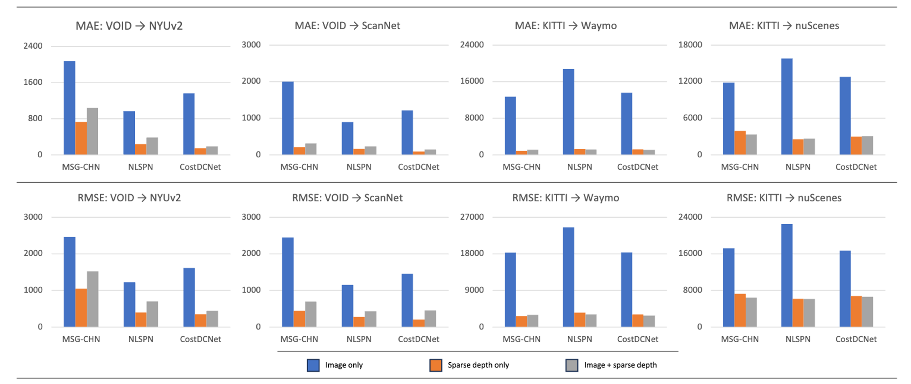
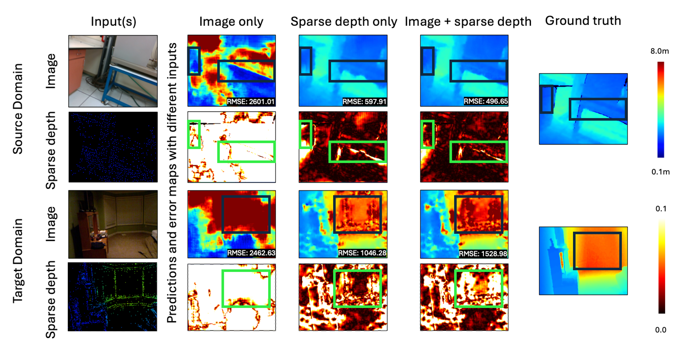
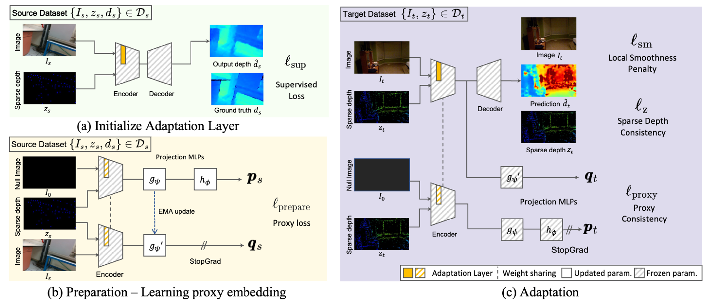

Model sensitivity to input modalities. Depth completion networks have a high reliance on sparse depth modality. Performing inference in a novel domain without the RGB image, i.e., using just sparse depth as input, can improve over using both data modalities.

Model sensitivity to input modalities.} While utilizing both sparse depth and image as input, the best performance is achieved in the source domain (VOID). Yet, forgoing the image in the test domain (NYUv2) often yields lower error than using both as input.

Overview. (a) The pretraining stage integrates an adaptation layer into a pretrained encoder and pretrains the adaptation layer on the source dataset. (b) The preparation stage learns the proxy mapping of features encoding sparse depth to those encoding both inputs. (c) The adaptation stage deploys the model to the target domain and updates the adaptation layer by leveraging proxy embeddings as guidance.

Qualitative result in Indoor adaptation scenario (VOID to NYUv2).

Qualitative result in Outdoor adaptation scenario (KITTI to nuScenes).